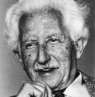
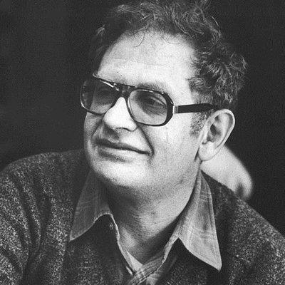

Adolescent Development
Adolescence and the Life Cycle
- While childhood and adulthood are equally important, we focus our attention on adolescence when a person is said to be undergoing the tumultuous teen years where they begin to develop personal authority and autonomy of decision-making while relying less on parental influence.
- In order to gain this type of authority and autonomy, they have to learn skills (developmental tasks) to successfully transition to the next developmental stage.
- If these development tasks are not completed, an individual may not be able to meet the roles and expectations for him or her in social circumstances.
|
Cognitive Development
- Popularized by developmental psychologist Jean Piaget (1896-1980), cognitive development refers to the mental activities associated with knowing, remembering, and communicating.
- To make sense of the world, children and adolescents create mental ideas or schemas, into which they pour life’s experiences.
- This schema continues into adulthood.
|
Cognitive Development
Children move through four different life stages of cognitive development:
|
Age Range
|
Stage
|
|
0-12 years
|
Sensorimotor
Sees the world through senses and related actions (hearing, seeing, touching, mouthing)
|
|
2-7 years
|
Preoperational
Able to represent objects with words and images; more of intuitive rather than logical reasoning
|
Cognitive Development
Children move through four different life stages of cognitive development:
|
Age Range
|
Stage
|
|
7-11 years
|
Concrete operational
Capable of thinking logically about events and is developing a strong ability for mathematical operations
|
|
12 through adulthood
|
Formal operational
Can move beyond concrete experiences and imagine hypothetical possibilities to help decode the world around; abstract reasoning is a key feature of this stage
|
Psychosocial Development
- In contrast to Sigmund Freud who believed that much of psychosocial development happens during the first five years of life, Erik Erikson (1902-1994) maintained the continual development of personality and behaviour throughout the life cycle where each stage poses a challenge and a crisis for the individual to face and overcome.
|
Psychosocial Development

- Social affiliation was the primary motivation for human behaviour.
- Adolescence is a period during which an individual’s primary function is to establish a personal identity, fashioned out of the individual’s efforts.
- A personal philosophy or ideology goes with the personal identity they seek.
- A stable and healthy philosophy of life guides the individual to make prudent choices and fosters mature behaviour.
- Provided eight distinct stages of development that unfold at various times in the life cycle, each is marked with challenges that have to be overcome to ensure a healthy development in the individual.
|
Moral Development
- The ability to distinguish between right and wrong or good and bad behaviour is a key feature of maturity.
- Lawrence Kohlberg (1927-1987), an American psychologist who is known for his theory of moral development came about how moral reasoning and behaviour is developed in the individual.

- Kohlberg’s three stages of moral development are: the pre-conventional or pre-moral level; the conventional level; and postconventional or autonomous level.
- His key finding is the process of internalization that occurs as the individual develops moral behaviour. It is when a change occurs in a person’s behaviour from being controlled externally to that of being controlled by the individual’s personal standards and beliefs.
- As the individual moves toward full moral development, s/he also reaches full internalization of moral thought even in young adulthood.
Prosocial Behavior
- Under the concept of moral development, another notable concept to mention is the concept of prosocial behavior or the positive, constructive, and helpful behaviour.
Prosocial Behavior
- This type of behaviour is displayed by individuals whose social and personal commitment to help others is the forefront of their social interactions.
Moral Development
- Philip Zimbardo (1933-), a professor from Stanford University and best known for his Stanford Prison experiment has a compelling statement on prosocial and antisocial behaviour.
- He noted that people have two prevailing temperaments that lead to positive or negative change in the world - heroic and hostile imagination.
- He stated that both Gandhi and Mother Teresa exhibited the heroic imagination which is the mindset of individuals who take a personal stand against wrongdoings around them. They may also be called as the upstanders.
- Its opposite is the hostile imagination, which is when a person unleashes the worst behaviour that infects society in a negative way.
- For Zimbardo, while there are many who succumb to the negative power of social situations, there are always some who refuse and resist.
- Our history books are full of upstanders and other examples of heroic imagination in action. Hence, people should be taught that we should be ready to take on a heroic imagination once triggered or provoked by a situation that may come only once in our lifetime.